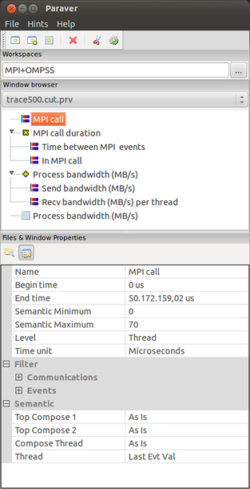
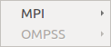
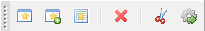
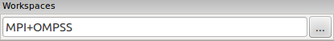

The main window centralizes most of the information of files, windows and their properties. The main window also allows navigating the main functionalities by the means of menus and buttons.
Every window is identified and their properties can be modified. The main window also allows creating/selecting/combining timelines or histograms.
The following image represents the main window during an analysis session:

The general arrangement of the different sections is as follows: at the top there's a menu bar and a button bar; below them there's the “Workspaces” section and the “Window browser” section and the “Files & Window Properties” section.
The menus and their entries follow general rules. They're separated by areas; some of them have associated shortcuts; others, ending with “...”, tells you that a dialog will be opened; those showing an arrow pointing to the right open submenus.
There are 3 menus, “File”, “Hints” and “Help”. Menu “Hints” may appear disabled if there's no loaded trace.

If you click the menu “File” what you get is:

Basically, the menu entries let the analyst load/unload traces, load Paraver Configuration Files (analysis views constructed as combinations of timelines or histograms), or load/save Sessions (a global analysis state snapshot). Also the user will be able to change the main wxParaver settings with Preferences.
Under “Hints” you'll find a two-level structure of menus related to your your current enabled Workspaces. The second level contains the analysis hints for it. In the example below, you see that only the MPI workspace is enabled.

Finally, the “Help” menu unfolds to the documentation and credits windows:

The main buttons appear grouped in three areas: windows creation, windows destruction and utilities, as shown below.

The first three buttons create single, derived timelines and histograms, the button with a red cross icon destroys the current selected window. Finally, the last two buttons open dialogs in order to cut/filter your trace or execute other tools.
Workspaces are sets of the most useful analyses and views and can be enabled or disabled at user request. Their state modify the “Hints” menu next time it's opened.
In the image below there are two active workspaces. The selection can be changed manually by clicking on the right button.

It provides information about the available windows for the selected trace.

The current trace is shown in the trace combo box. Changing the selector will show the windows for the new selected trace into the below windows section. Initially it may be empty if no window has been created or no configuration file has been loaded yet for that trace.
The icons on the left of every window entry describe the type of window. In the figure above there are:
|
Icon |
Type of Window |
|
|
Single timelines (the first one, or also the leafs of the derived timeline “MPI call duration”) |
|
|
Derived timelines (“MPI call duration” itself). The icons represents the function that the child windows use to compose the derived timeline. |
|
|
Histograms (the last one) |
Clicking on a timeline or a histogram entry selects it. Then, it's surrounded with a grey square (in the example image, “MPI call” timeline appears this way), their properties are fed back into the properties section and if the window itself is currently open, it rises.
Double-click instead shows/hides that window. Notice that being hidden is different from being destroyed (with the button with a red cross icon in the main buttons bar). If you destroy a window then you'll have to create it again if needed, while a hidden window remains loaded.
The tool also allows drag and drop operation picking one timeline into another to create a derived timeline, as if the second button seen in the previous Main icons bar section was clicked. The derived timeline dialog will be open.
Also, right click in a timeline or a histogram entry will open their popup menus.
The last section of the main window is used for two different purposes. These purposes are as a file browser and as a property editor of the current selected window.
You can change from one to the other clicking one of the two buttons on the top left. Left button is for files browser and right button is for window properties.
When “Files” button is clicked a simple file browser is shown. It can be used to navigate and double click to load a file. They can be filtered with the bottom selector between CFG files (*.cfg), Trace files (*.prv or *.prv.gz) or both.

When “Window Properties” button is clicked a collection of properties for the current selected window is shown. These properties depends whether it's a timeline, a derived timeline or a histogram. Every time another window's selected its properties are shown.
The following image depicts the properties of a single timeline:

This one is for the properties of a histogram window:

The properties are grouped under subsections that you can fold/unfold.
Every subsection contains a list of properties, with their names to the left and their values to the right. If you compare the two images above, for the timeline and the histogram, you'll see how fields and sections are varying depending on the type of window.
The value of a property can be changed by clicking into the right side of the property. Some properties get the data with text boxes, others from lists of values and others open intermediate dialogs.
When the value of a property is modified, the changes are brought inmediately to the window, so it would be recomputed again if needed.
There's a reduced set of main buttons in wxparaver focused on the main actions: create windows and invoke utilities/external tools.
They're basically divided between the main window and the histogram window.
|
Icon |
Action |
|
|
Creates a new timeline using the current trace (changeable with the trace selector). By default, the applied semantic is “State As Is” |
|
|
Opens the “Create Derived Timeline Window” Dialog |
|
|
Opens the “Create Histogram” Dialog |
|
|
Deletes selected timeline or histogram |
|
|
Opens the “Cut & Filter” Dialog |
|
|
Opens the “Run Application” Dialog |
|
|
Selects the “Files/Directories” view in the “Files & Window Properties” section |
|
|
Selects the “Window Properties” view in the “Files & Window Properties” section |
|
Icon |
Action |
|
|
Open the control timeline |
|
|
Open data timeline |
|
|
Open extra control window (in the main window, under Window Properties → 3D → 3rd Window) |
|
|
Zoom. It swaps the representation of the histogram between the numerical view and a more compact graphical one |
|
|
Opens a timeline showing only a subset of values. After clicking it, the mouse pointer turns into a crosshears icon. By drag and drop, you can set this range of values. |
|
|
View gradient colors for values |
|
|
Horizontal / Vertical. Turns 90º to swap rows and values axis |
|
|
Hydes / Shows empty columns |
|
|
Changes the color of the header labels of the colums |
|
|
Inclusive/Exclusive overlap accumulation mode (only with stacked values). When exclusive mode is set, overlapped values are substracted from base values. |
Using shortcuts keys in wxparaver is a good way to improve your productivity. As you'll see, most of them are generic for many applications, so probably you won't need any special effort to get used with them.
Some of the shortcut keys may vary depending on your operative system. This reference is written for GNU/Linux, so variations will explicitly tell for which OS happens. It's also possible that your desktop/virtual machine had them assigned. Current version of wxparaver can't override them.
The navigation through menus is done with the arrow keys and the Home/End keys, both for the main menu in the main window and for the contextual menus of timelines and histograms (after right click inside them).
|
Shortcut Keys |
Effect |
|
Up / Down arrows |
Navigate to previous / next menu item |
|
Home / End |
Navigate to first / last item of the menu |
|
Left / Right arrows |
Exit from or Enter to a submenu |
|
Enter / Space |
Select menu item |
|
Esc |
Close menu |
The interaction with wxparaver dialogs follow the usual dialog standards: Tab to move to next field, Space or Enter to change checkboxes or radiobuttons, and common textbox edition.
|
Shortcut Keys |
Effect |
|
Enter |
Intro value |
|
Tab |
Navigate to next active widget |
|
Shift + Tab |
Navigate to previous active widget |
|
Esc |
Cancel dialog and exit |
|
Ctrl + A (in textboxes) |
Select all |
|
Ctrl + Del (in textboxes) |
Delete to next dot/comma or to the end |
|
Left/Right arrows (in textboxes) |
Move cursor in text boxes |
|
Enter / Space (in radiobuttons or checkboxes) |
Check/uncheck radio button or checkbox |
|
Up / Down arrows (in spin controls) |
+1/-1 unit |
They mainly manage the dialogs for handling sessions and opening traces.
|
Shortcut Keys |
Effect |
|
Ctrl + I |
Open “Load Session” dialog |
|
Ctrl + L (Windows only) |
Open “Load Session” dialog |
|
Ctrl + S |
Open “Save Session” dialog |
|
Ctrl + O |
Open trace file |
|
Ctrl + Q |
Quit wxparaver |
|
Esc |
Close menu / Cancel dialog |
One usual way to explore timelines and histograms is by using mouse “Drag and Drop”. The default performed action (zoom in for all the rows) can be tuned if you press Ctrl or Shift at the same time.
|
Shortcut Keys |
Effect |
|
Ctrl + C |
Copy all properties |
|
Ctrl + V |
Open “Paste Special” dialog to paste properties |
|
Shift + Drag & Drop (only in timelines) |
Measure region duration |
|
Ctrl + Drag & Drop |
Zoom by rows and time |
|
Esc (while Drag & Drop) |
Abort current Drag & Drop |